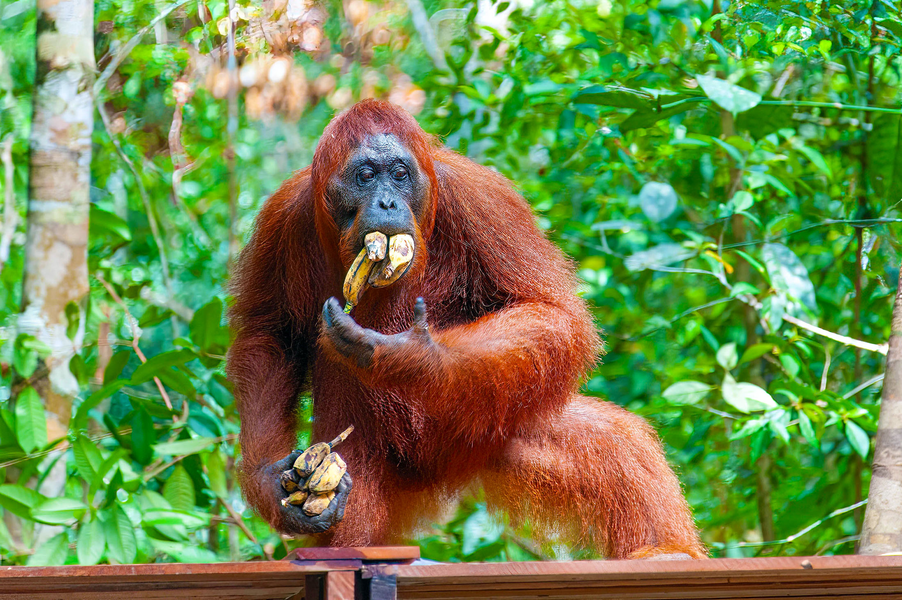

What are Orangutans? What is happening to them?

Orangutans are some of the closest relatives to humans and are highly intelligent animals. They can form strong bonds and even feel emotions like us. In fact, the name “orangutan” comes from Indonesian words meaning “person of the forest”, showing how closely they are connected to us. Orangutans are endangered animals native to the rainforests of Borneo and Sumatra. They face major threats from habitat loss and poaching - the Bornean orangutan population, which was estimated at over 200,000 in the early 1970s, has declined by more than 50% due to deforestation and hunting, while Sumatran orangutans are estimated to number between 6,600 and 14,000. They are classified as a critically endangered species. Our initiative is dedicated to protecting orangutans and their habitats through conservation efforts. By supporting our cause, you can help ensure a future for these incredible creatures and the ecosystems they inhabit. Find out more!